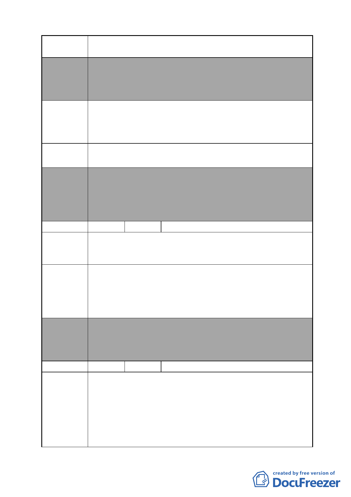

案 名 變更臺北市南港區鐵路地下化沿線土地主要計畫案
本案除文字誤繕應再作修正外，其餘依市府本次會議所送修
委員會 正計畫書內容通過。
決議 （本項陳情地點依市府本次會議所送修正計畫書，係屬本案
計畫範圍 D 區）
南港區南港段 1 小段 1281、1282 地號土地，長期無償供公共
陳情理由 2
交通及行人通行使用，促進當地繁榮進步，貢獻良多，係緊
鄰編號 D 計畫基地邊，現行 20 米南港路 2 段道路用地，政府
值此變更計畫之際，併入辦理整體開發，實乃良政。
請將該土地併入「台北南港高鐵站沿線新生地暨週邊土地整
建議辦法 2 體再開發計畫案」辦理整體開發。
委員會
決議
編號
陳情理由
建議辦法
委員會
決議
編號
陳情理由
本案除文字誤繕應再作修正外，其餘依市府本次會議所送修
正計畫書內容通過。
（本案市府原則係以公有、國營事業及私有刻正申辦都市計
畫變更之街廓為計畫範圍，依市府本次會議所送修正計畫
書，本項陳情地點非屬計畫範圍）
4 陳情人 葉鑾鶯
1.陳情地點：南港區南港段四小段 549、551-1、555 地號土地
（南港區向陽路 90 號、96 號）。
2.不要強佔老百姓的土地，與民爭利。
1.若政府一定要開發，以自辦重劃為基準，原地發還。
2.各國營事業特許土地不得調高公告地價。
3.百姓的土地調高（本地住戶的）公告現值。
4.針對容積率，以本地住戶為主，調高為 500 為基礎。
5.地上物補償，以市價加成為 2 倍補償。
本案除文字誤繕應再作修正外，其餘依市府本次會議所送修
正計畫書內容通過。
（市府本次會議所送修正計畫書，業將陳情地點剔除於市地
重劃範圍）
5 陳情人 葉育和、李珠蓮
1.陳情地點：
（1）南港區南港段四小段 549、551-1、555 地號土地（南港
區向陽路 92 號、96 號）。
（2）南港區南港段四小段 551、552 地號土地（南港區向陽
路 96 號）。
2.不要強佔民地。本人所有土地與向陽路接臨，保留此路邊土
地或原地發還應不致影響整體計畫，對吾等百姓之生計確有
- 22 -